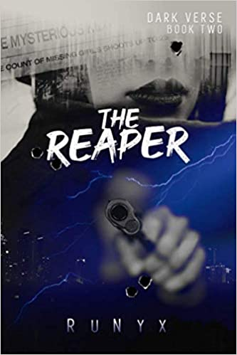
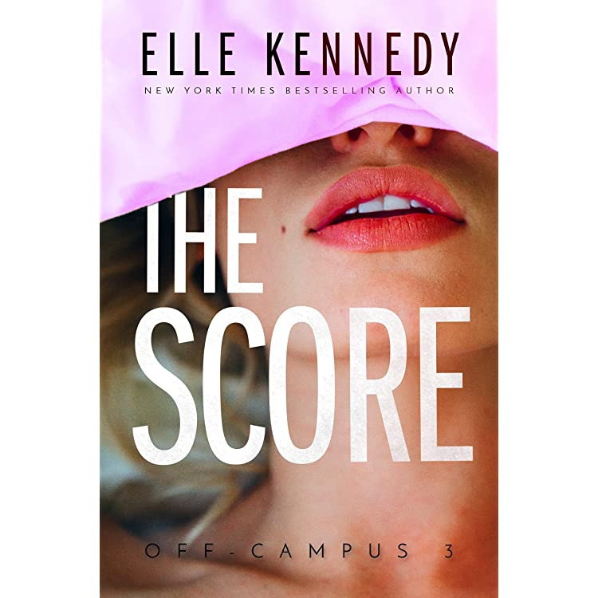

Rowan I'm in the business of creating fairy tales. Theme parks. Production companies. Five-star hotels. Everything could be all mine if I renovated Dreamland. Zahra After submitting a drunk proposal criticizing Dreamland's most expensive ride, I should have been fired. Instead, Rowan Kane offered me a dream job.
He knows how to score, on and off the ice...
Tristan ‘The Predator’ Caine had been unprepared for Morana Vitalio. After spending his entire life with a vow he broke on a rainy night, he finds himself torn in a battle between his painful past and an uncertain future. The only thing he knows? Her life still belongs to him.

As a third-year Ph.D. candidate, Olive Smith doesn't believe in lasting romantic relationships--but her best friend does, and that's what got her into this situation. Convincing Anh that Olive is dating and well on her way to a happily ever after was always going to take more than hand-wavy Jedi mind tricks: Scientists require proof. So, like any self-respecting biologist, Olive panics and kisses the first man she sees.